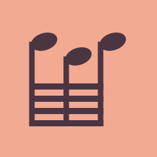
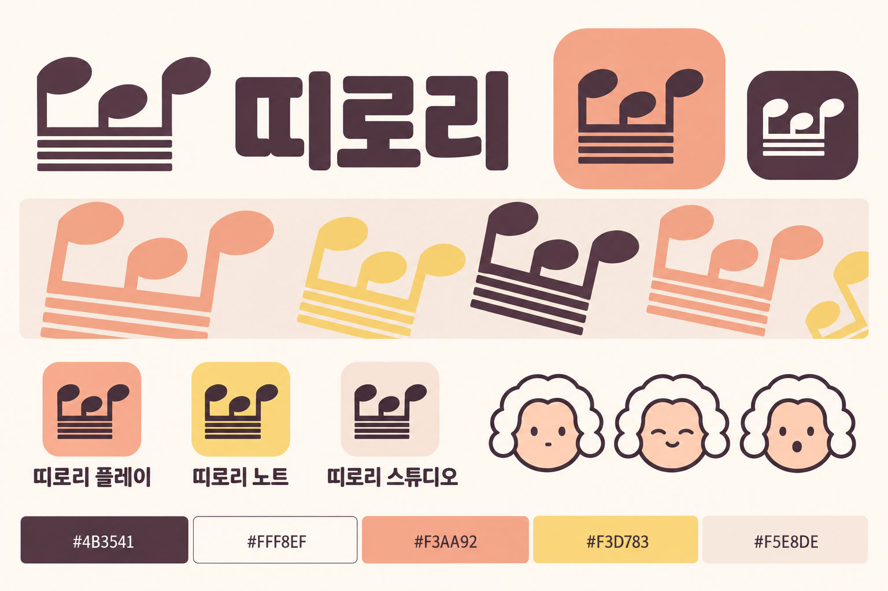
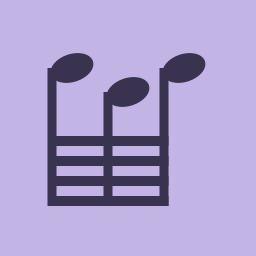
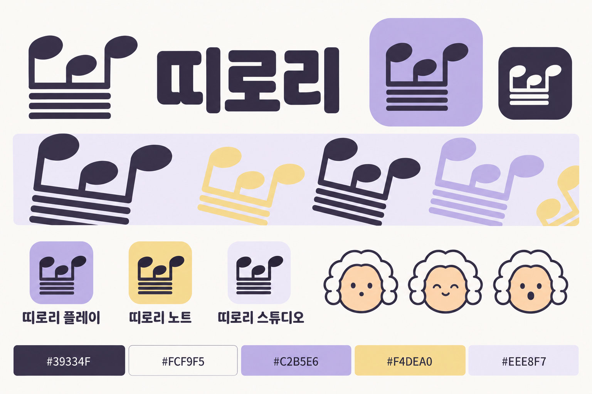
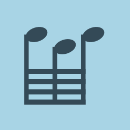
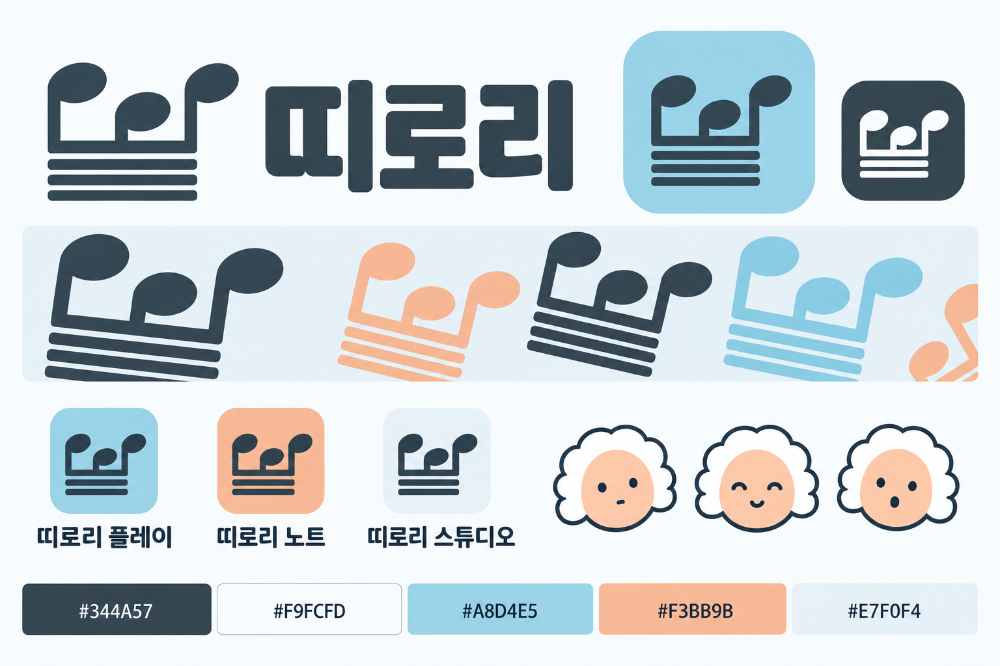

띠로리 / ROUND 02 / 2026.10.22 / 미확정
세 음, 네 연결선.
색은 더 부드럽게.
군청·노랑을 임시안으로 돌리고 세 조합을 비교한다. 추천은 살구·크림. 심벌의 음표머리를 세 개로 줄이고 64분음표의 네 연결선을 유지했다. 바흐는 얼굴·흰 가발·작은 표정만 남기는 방향이다.
01 / 추천안
살구·크림

살구의 명랑함에 짙은 자두색으로 중심을 잡는다. 띠로리라는 소리에 가장 장난스럽고 편하게 어울리는 안.
#4B3541#FFF8EF#F3AA92#F3D783#F5E8DE#8B465224·32px는 간격을 조정한 소형 도형. 네 연결선은 유지한다.
색·단순한 바흐 얼굴 비교 보드
AI 보드는 색과 얼굴의 분위기 참고용이다. 일부 연결선이 줄기에서 떨어져 있어 기보 구조의 기준으로 쓰지 않는다. 위 SVG가 네 연결선 구조 연구다.

02 / 비교안
라일락·버터

익숙한 음악 도구의 강한 원색 대신 포근하고 살짝 엉뚱한 인상. 부드러움이 우선이면 이쪽.
#39334F#FCF9F5#C2B5E6#F4DEA0#EEE8F7#6B579724·32px는 간격을 조정한 소형 도형. 네 연결선은 유지한다.
색·단순한 바흐 얼굴 비교 보드
AI 보드는 색과 얼굴의 분위기 참고용이다. 일부 연결선이 줄기에서 떨어져 있어 기보 구조의 기준으로 쓰지 않는다. 위 SVG가 네 연결선 구조 연구다.

03 / 비교안
하늘·살구

산뜻하고 편안한 인상. 악보·편집 화면에 자연스럽지만 세 안 중 브랜드의 장난기는 가장 약하다.
#344A57#F9FCFD#A8D4E5#F3BB9B#E7F0F4#456C8224·32px는 간격을 조정한 소형 도형. 네 연결선은 유지한다.
색·단순한 바흐 얼굴 비교 보드
AI 보드는 색과 얼굴의 분위기 참고용이다. 일부 연결선이 줄기에서 떨어져 있어 기보 구조의 기준으로 쓰지 않는다. 위 SVG가 네 연결선 구조 연구다.
